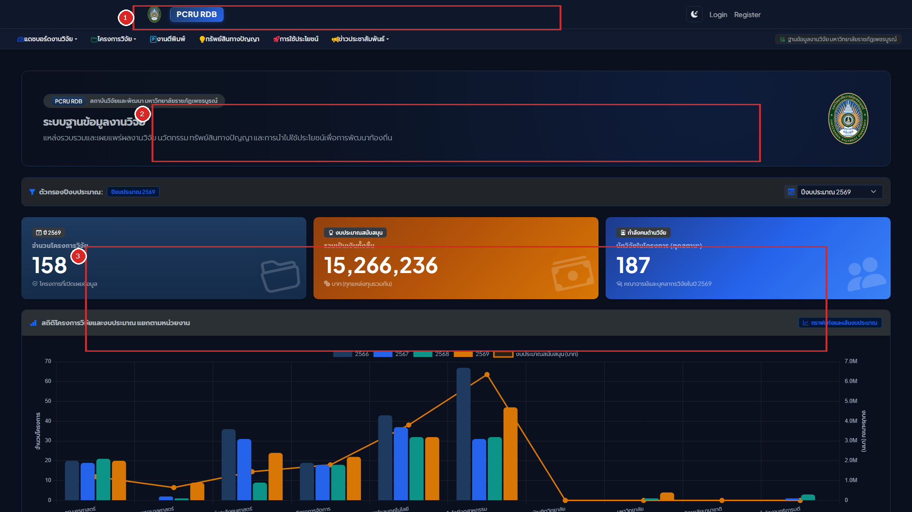
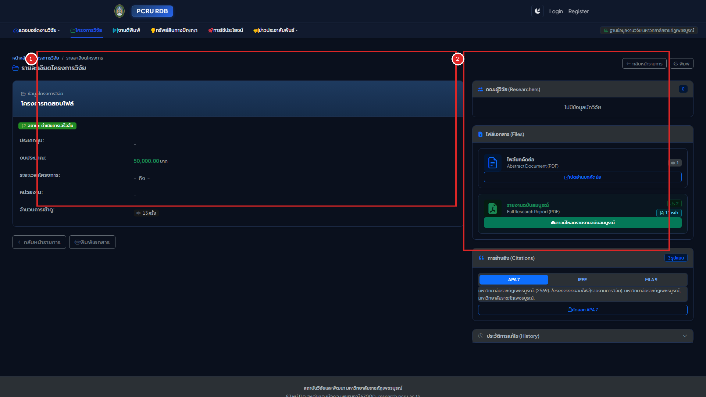
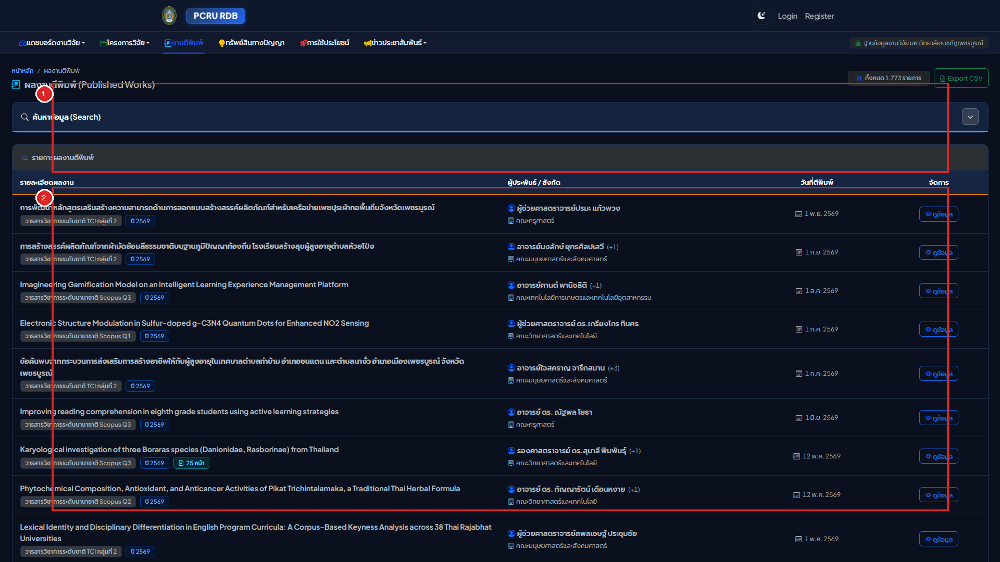
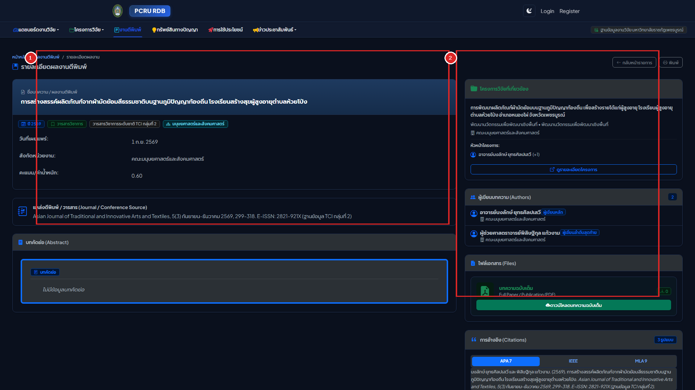
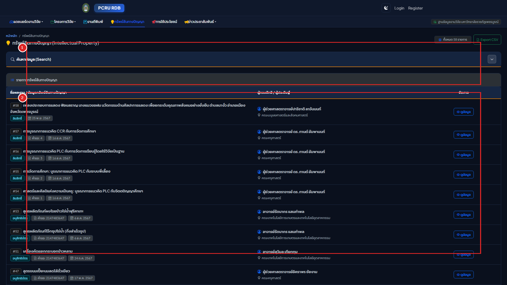
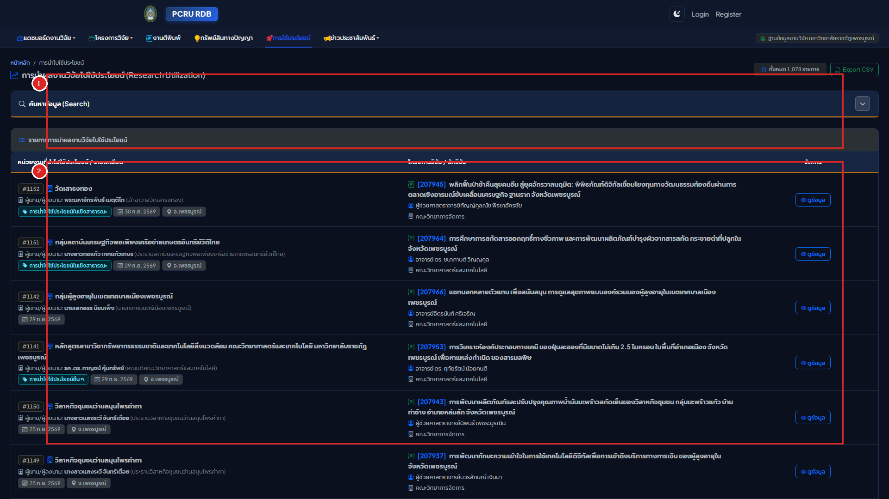
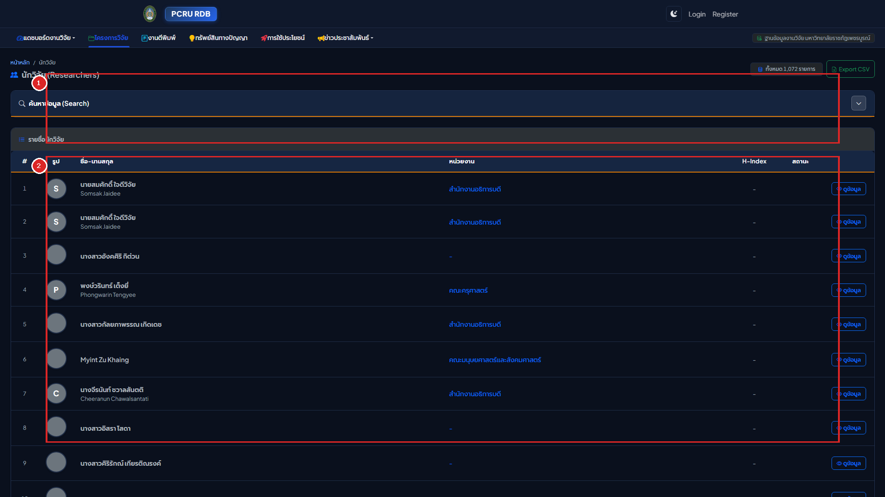
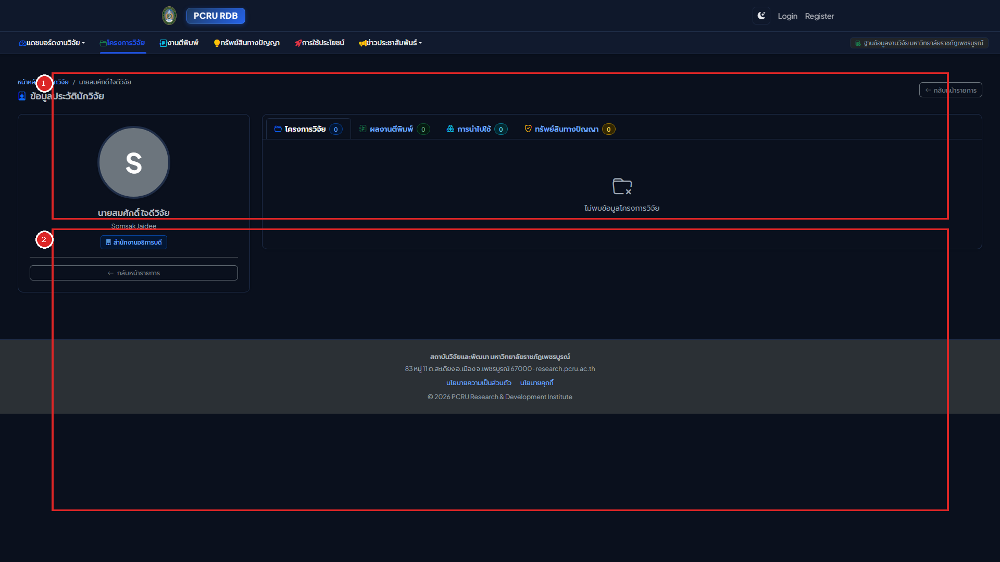
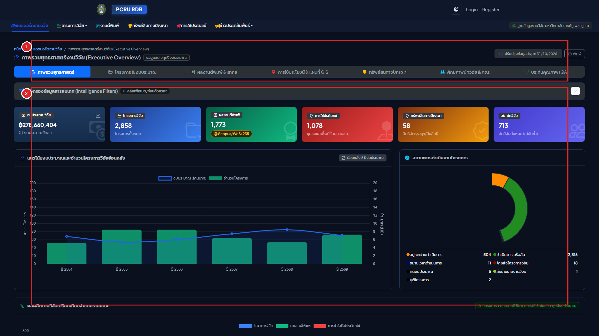

เล่มที่ 1: คู่มือการใช้งานระบบหน้าบ้าน (Volume 1: Frontend Public User Manual)
ระบบฐานข้อมูลงานวิจัย มหาวิทยาลัยราชภัฏเพชรบูรณ์ (PCRU Research Database)
ข้อมูลจำเพาะของเอกสาร (Document Control)
- รหัสเอกสาร:
PCRU-RDB-MAN-VOL1-2569 - กลุ่มผู้ใช้งานเป้าหมาย: คณาจารย์, นักวิจัย, นักศึกษา, บุคลากรทางการศึกษา, หน่วยงานภาครัฐ/เอกชน และประชาชนทั่วไป
- รูปแบบการใช้งาน: ระบบเว็บแอปพลิเคชันสาธารณะ (Public Web Portal) รองรับคอมพิวเตอร์ แท็บเล็ต และสมาร์ตโฟน
- URL เข้าใช้งาน:
http://laravel_rdb.test/(หรือโดเมนหลักของสถาบันวิจัยและพัฒนา มหาวิทยาลัยราชภัฏเพชรบูรณ์)
สารบัญ (Table of Contents)
- บทที่ 1: ภาพรวมระบบและการนำทาง (System Overview & Interface Navigation)
- 1.1 แนะนำระบบและพันธกิจคลังปัญญา มรภ.เพชรบูรณ์
- 1.2 แผนผังสถาปัตยกรรมระบบหน้าบ้าน (Public System Architecture)
- 1.3 โครงสร้างหน้าจอหลักและแถบเมนูนำทาง (Portal Layout Walkthrough)
- 1.4 การสลับโหมดการแสดงผล สว่าง/มืด (Light Mode & Dark Mode Switcher)
- บทที่ 2: ระบบการสืบค้นข้อมูลงานวิจัยอัจฉริยะ (Smart Search & Dynamic Filtering)
- 2.1 การค้นหาด่วนจากหน้าแรก (Global Quick Search)
- 2.2 การใช้ตัวกรองปีงบประมาณ พ.ศ. (Fiscal Year Filtering)
- 2.3 กลไกการค้นหาแบบกลุ่มคำ (Multi-Keyword Search Logic: AND / OR)
- 2.4 ระบบตัดคำนำหน้าชื่อภาษาไทยอัตโนมัติ (Thai Title Prefix Normalization)
- 2.5 ปฏิทิน พ.ศ. และการตรวจสอบช่วงวันที่ (Thai Date Range Validation)
- บทที่ 3: การใช้งานโมดูลโครงการวิจัย (Research Projects Directory)
- 3.1 หน้ารวมรายการโครงการวิจัยและแผงค้นหาละเอียด (
/rdbproject) - 3.2 พจนานุกรมช่องค้นหาและตัวกรองโครงการวิจัย (Filter Fields Dictionary)
- 3.3 ตารางแสดงผลรายการโครงการและป้ายสถานะ (Status Badges Reference)
- 3.4 หน้าแสดงรายละเอียดโครงการวิจัยฉบับเต็ม (
/rdbproject/{id}) - 3.5 ระดับการเข้าถึงและสิทธิ์เปิดเผยเล่มรายงานวิจัย 3 ระดับ (Document Access Policy)
- 3.6 ระบบพรีวิวภาพปกหน้าแรก (.webp) และป้ายแสดงจำนวนหน้าเอกสาร
- 3.1 หน้ารวมรายการโครงการวิจัยและแผงค้นหาละเอียด (
- บทที่ 4: การใช้งานโมดูลผลงานตีพิมพ์และงานวิชาการ (Publications & Academic Citations)
- 4.1 หน้ารวมรายการบทความตีพิมพ์และตัวกรองฐานข้อมูล (
/rdbpublished) - 4.2 ระดับชั้นฐานข้อมูลวิชาการ (Academic Database Tiers)
- 4.3 หน้ารายละเอียดบทความวิจัยและการดาวน์โหลดไฟล์ Full Paper (
/rdbpublished/{id}) - 4.4 ระบบสร้างข้อความอ้างอิงอัตโนมัติใน 1 คลิก (Academic Citations Generator)
- 4.1 หน้ารวมรายการบทความตีพิมพ์และตัวกรองฐานข้อมูล (
- บทที่ 5: การใช้งานโมดูลทรัพย์สินทางปัญญา (Intellectual Property - DIP)
- 5.1 หน้ารวมรายการทรัพย์สินทางปัญญา (
/rdbdip) - 5.2 การจำแนกประเภททรัพย์สินทางปัญญา
- 5.3 หน้ารายละเอียดคำขอ การตรวจสอบเลขที่คำขอ และเอกสารสำคัญ (
/rdbdip/{id})
- 5.1 หน้ารวมรายการทรัพย์สินทางปัญญา (
- บทที่ 6: การใช้งานโมดูลการนำงานวิจัยไปใช้ประโยชน์ (Research Utilizations)
- 6.1 มิติการนำผลงานวิจัยไปใช้ประโยชน์ 4 ด้าน
- 6.2 การสืบค้นผลงานตามพื้นที่ภูมิศาสตร์ (จังหวัด / อำเภอ / ตำบล)
- 6.3 หน้ารายละเอียดการใช้ประโยชน์ การประเมินผลกระทบ และหลักฐานรับรอง (
/rdbprojectutilize/{id})
- บทที่ 7: การใช้งานทำเนียบนักวิจัย (Researchers Directory & Academic Portfolio)
- 7.1 หน้ารวมทำเนียบนักวิจัยและการค้นหาตามสังกัดคณะ (
/rdbresearcher) - 7.2 หน้าแฟ้มประวัติและผลงานวิจัยสะสมของนักวิจัย (
/rdbresearcher/{id}) - 7.3 การเชื่อมต่อฐานข้อมูลสากล Scopus Author ID, ORCID iD และดัชนี h-index
- 7.4 แท็บรวมผลงานแบบบูรณาการ 4 มิติในหน้าเดียว (Portfolio Tabs)
- 7.1 หน้ารวมทำเนียบนักวิจัยและการค้นหาตามสังกัดคณะ (
- บทที่ 8: แดชบอร์ดสถิติสารสนเทศและฟีดข่าวสาร (Dashboards & RSS Feeds)
- 8.1 การใช้งานศูนย์สารสนเทศงานวิจัย (Intelligence Dashboards: 6 มิติ)
- 8.2 แถบตัวกรองแดชบอร์ดและการวิเคราะห์ข้อมูลเปรียบเทียบข้ามปี พ.ศ. (พร้อม YoY Deltas & Small Base Rule)
- 8.3 กราฟสถิติแบบโต้ตอบ (Chart.js) และตารางจัดอันดับพร้อมเส้นสัดส่วน 3px (Ranked Breakdown Lists)
- 8.4 การสมัครรับฟีดข่าวสารผ่าน XML RSS Feeds
- บทที่ 9: การเชื่อมโยงสากลและการจัดทำดัชนีทางวิชาการ (Academic SEO, Google Scholar & Dynamic Sitemaps)
- 9.1 การจัดทำดัชนีสำหรับ Google Scholar (Highwire Press Metadata)
- 9.2 มาตรฐานคลังสารสนเทศสถาบัน Dublin Core (DC.*)
- 9.3 การแสดงผลพรีวิวบนโซเชียลมีเดียด้วย Open Graph และภาพปก .webp
- 9.4 ข้อมูลโครงสร้าง Schema.org JSON-LD สำหรับ Search Engine ยุคใหม่
- 9.5 แผนผังเว็บไซต์ไดนามิก Dynamic XML Sitemaps (/sitemap.xml)
- 8.1 การใช้งานศูนย์สารสนเทศงานวิจัย (Intelligence Dashboards: 6 มิติ)
- 8.2 แถบตัวกรองแดชบอร์ดและการวิเคราะห์ข้อมูลเปรียบเทียบข้ามปี พ.ศ.
- 8.3 กราฟสถิติแบบโต้ตอบ (Interactive Chart.js) และการตรวจสอบข้อมูล Tooltip
- 8.4 การสมัครรับฟีดข่าวสารและงานประชุมวิชาการผ่าน XML RSS Feeds
บทที่ 1: ภาพรวมระบบและการนำทาง (System Overview & Interface Navigation)
1.1 แนะนำระบบและพันธกิจคลังปัญญา มรภ.เพชรบูรณ์
ระบบฐานข้อมูลงานวิจัย (PCRU Research Database) พัฒนาขึ้นภายใต้แนวคิด Scholarly Editorial Craftsmanship โดยสถาบันวิจัยและพัฒนา มหาวิทยาลัยราชภัฏเพชรบูรณ์ เพื่อเป็นคลังสารสนเทศกลางระดับสถาบันในการรวบรวม จัดหมวดหมู่ เผยแพร่ และคุ้มครองสิทธิ์ผลงานทางวิชาการ ปัจจุบันระบบจัดเก็บและให้บริการข้อมูลอย่างเป็นรูปธรรม ประกอบด้วย:
- โครงการวิจัย (Research Projects): กว่า 2,870 โครงการ ครอบคลุมทั้งทุนงบประมาณแผ่นดิน, ทุนงบประมาณรายได้, ทุน บพข./บพท./วช. และทุนจากภาคเอกชน
- ผลงานตีพิมพ์ทางวิชาการ (Publications): กว่า 1,873 บทความ ทั้งในวารสารระดับนานาชาติ (Scopus / Web of Science) และวารสารระดับชาติ (TCI กลุ่ม 1 และ 2)
- การนำงานวิจัยไปใช้ประโยชน์ (Research Utilizations): กว่า 1,112 รายการ ครอบคลุม 4 มิติการพัฒนาพื้นที่
- ทรัพย์สินทางปัญญา (Intellectual Property): สิทธิบัตร อนุสิทธิบัตร และลิขสิทธิ์รวม 59 รายการ
- ทำเนียบนักวิจัย (Researchers Portfolio): กว่า 1,072 ท่าน พร้อมข้อมูลเชื่อมโยงดัชนีสากล
1.2 แผนผังสถาปัตยกรรมระบบหน้าบ้าน (Public System Architecture)
flowchart TD
User(["ผู้ใช้งานภายนอก, นักศึกษา, คณาจารย์"]) --> Home["หน้าแรก (Portal Home)"]
Home --> Nav["แถบนำทางหลัก (Main Navbar)"]
Nav --> M1["1. โครงการวิจัย (/rdbproject)"]
Nav --> M2["2. ผลงานตีพิมพ์ (/rdbpublished)"]
Nav --> M3["3. ทรัพย์สินทางปัญญา (/rdbdip)"]
Nav --> M4["4. การใช้ประโยชน์ (/rdbprojectutilize)"]
Nav --> M5["5. ทำเนียบนักวิจัย (/rdbresearcher)"]
Nav --> M6["6. แดชบอร์ดสารสนเทศ (/dashboard)"]
Nav --> M7["7. ข่าวและประชุม (/researchnews)"]
M1 --> D1["หน้ารายละเอียด: บทคัดย่อ, ปก WebP, เล่มรายงาน 3 ระดับสิทธิ์"]
M2 --> D2["หน้ารายละเอียด: ข้อมูลวารสาร, DOI, Full Paper, Citation 3 สไตล์"]
M3 --> D3["หน้ารายละเอียด: เลขที่คำขอ, ผู้ประดิษฐ์, เอกสารรับรอง"]
M4 --> D4["หน้ารายละเอียด: 4 มิติใช้ประโยชน์, พื้นที่ภูมิศาสตร์, ผลกระทบ"]
M5 --> D5["หน้ารายละเอียด: Scopus ID, ORCID, h-index, ผลงานรวม"]
1.3 โครงสร้างหน้าจอหลักและแถบเมนูนำทาง (Portal Layout Walkthrough)

คำอธิบายส่วนประกอบหน้าจอหลัก:
- หมายเลข
[1]แถบเมนูนำทางหลัก (Universal Navigation Bar):- โลโก้มหาวิทยาลัย: คลิกเพื่อกลับสู่หน้าแรกของระบบได้ตลอดเวลา
- เมนูโมดูลสารสนเทศ 7 เมนู: เข้าถึงโมดูลวิจัยได้อย่างรวดเร็ว
- ปุ่มสลับโหมดสี (Theme Switcher): ปุ่มรูปดวงอาทิตย์/พระจันทร์
- ปุ่มเข้าสู่ระบบ (Login): นำเข้าสู่ระบบหลังบ้านด้วย Google Workspace หรือ Username
- หมายเลข
[2]แบนเนอร์ค้นหาและตัวกรองปี พ.ศ. (Hero Search & Year Filter):- ช่องสืบค้นรวม: พิมพ์คำค้นหาเพื่อค้นหาข้อมูลข้ามทุกโมดูลในระบบ
- Dropdown ปีงบประมาณ พ.ศ.: เลือกปีงบประมาณที่ต้องการเจาะจงดูข้อมูลสถิติ
- หมายเลข
[3]การ์ดสถิติภาพรวมงานวิจัย (Executive Counter Cards):- แสดงยอดรวมสะสมของโครงการวิจัย, งบประมาณสนับสนุนรวม, บทความตีพิมพ์ และการนำไปใช้ประโยชน์ โดยแสดงตัวเลขด้วยรูปแบบ
tabular-numsเพื่อให้แนวหลักตัวเลขตรงกันอย่างเป็นระเบียบ
- แสดงยอดรวมสะสมของโครงการวิจัย, งบประมาณสนับสนุนรวม, บทความตีพิมพ์ และการนำไปใช้ประโยชน์ โดยแสดงตัวเลขด้วยรูปแบบ
1.4 การสลับโหมดการแสดงผล สว่าง/มืด (Light Mode & Dark Mode Switcher)
ระบบถูกออกแบบให้รองรับการอ่านเอกสารทางวิชาการที่ใช้ระยะเวลานาน โดยมี 2 โหมดสีมาตรฐาน:
- Daylight Editorial Slate (โหมดสว่าง): พื้นหลังโทนสว่างนวลตา สบายตา ตัวหนังสือคมชัดระดับ 1px Hairline เหมาะสำหรับการทำงานเวลากลางวันและการสั่งพิมพ์
- Carbon-Navy Night Reading (โหมดมืด): พื้นหลังโทนสีน้ำเงินเข้มวิชาการ (
#0F172A) ผสมผสานสีกรมท่า (#1E293B) ตัดแสงสีฟ้าสะท้อนเข้าตา เหมาะสำหรับการอ่านบทคัดย่อหรือวิเคราะห์สถิติในเวลากลางคืน
ขั้นตอนการใช้งาน:
- คลิกที่ไอคอน ดวงอาทิตย์ (
☀️) / พระจันทร์ (🌙) บนแถบเมนูขวาบน - ธีมของหน้าจอจะสลับทันทีโดยไม่มีการรีเฟรชหน้าเว็บ (Zero-Flicker Transition)
- ระบบจะบันทึกสถานะลงใน
localStorageของเบราว์เซอร์ เพื่อให้เปิดใช้งานโหมดเดิมเสมอในการเข้าชมครั้งถัดไป
บทที่ 2: ระบบการสืบค้นข้อมูลงานวิจัยอัจฉริยะ (Smart Search & Dynamic Filtering)
2.1 การค้นหาด่วนจากหน้าแรก (Global Quick Search)
- พิมพ์คำค้นหาลงในช่องค้นหาบนแบนเนอร์หลักหน้าแรก
- ระบบจะค้นหาคำดังกล่าวครอบคลุมทั้ง:
- ชื่อโครงการวิจัย (ไทยและอังกฤษ)
- ชื่อบทความตีพิมพ์ และชื่อวารสาร
- คำสำคัญ (Keywords)
- บทคัดย่อ (Abstracts)
- ชื่อ-นามสกุลของนักวิจัย
- กดปุ่ม Enter หรือคลิกปุ่ม "ค้นหา" เพื่อเข้าสู่หน้ารายการผลการค้นหา
2.2 การใช้ตัวกรองปีงบประมาณ พ.ศ. (Fiscal Year Filtering)
- ที่แถบตัวกรองปีงบประมาณ สามารถเลือกดูสถิติและผลงานเฉพาะปี พ.ศ. ที่สนใจได้ (เช่น
2568,2567,2566, ...) - เมื่อเลือกปีงบประมาณ ตัวเลขสถิติบนการ์ดและรายการผลงานแนะนำด้านล่างจะปรับเปลี่ยนตามปีงบประมาณนั้นทันที
2.3 กลไกการค้นหาแบบกลุ่มคำ (Multi-Keyword Search Logic: AND / OR)
ในหน้ารายการของโครงการวิจัยและผลงานตีพิมพ์ ระบบมีกล่องค้นหาแบบกลุ่มคำที่ผู้ใช้สามารถพิมพ์หลายคำโดยคั่นด้วยช่องว่าง พร้อมเลือกตรรกะการจับคู่ได้ 2 โหมด:
flowchart TD
Keywords["คำค้นหา: เกษตร อินทรีย์ เพชรบูรณ์"] --> Choice{"เลือกโหมดการจับคู่"}
Choice -->|โหมด AND ตรงทุกคำ| M_ALL["ค้นหาเฉพาะรายการที่มีทั้ง 3 คำครบถ้วน (High Precision)"]
Choice -->|โหมด OR ตรงบางคำ| M_ANY["ค้นหารายการที่มีคำใดคำหนึ่ง หรือทั้ง 3 คำ (High Recall)"]
- 1. โหมด "เจอทั้งหมด (ตรงทุกคำ - AND)" (ค่าเริ่มต้น):
- ใช้เมื่อต้องการผลลัพธ์ที่ตรงจุดและแคบลง เช่น ค้นหา
"ข้าวไร่ เขาค้อ"ผลลัพธ์จะต้องมีทั้งคำว่า "ข้าวไร่" และ "เขาค้อ" ปรากฏอยู่ในชื่อเรื่องพร้อมกัน
- ใช้เมื่อต้องการผลลัพธ์ที่ตรงจุดและแคบลง เช่น ค้นหา
- 2. โหมด "เจอบางคำ (ตรงคำใดคำหนึ่ง - OR)":
- ใช้เมื่อต้องการค้นหาทางเลือกหรือคำที่มีความหมายใกล้เคียงกัน เช่น ค้นหา
"พลังงาน แสงอาทิตย์ ลม ชีวมวล"ระบบจะแสดงรายการที่มีคำใดคำหนึ่งปรากฏอยู่
- ใช้เมื่อต้องการค้นหาทางเลือกหรือคำที่มีความหมายใกล้เคียงกัน เช่น ค้นหา
2.4 ระบบตัดคำนำหน้าชื่อภาษาไทยอัตโนมัติ (Thai Title Prefix Normalization)
เพื่อแก้ปัญหาการค้นหาชื่อนักวิจัยไม่พบเนื่องจากการกรอกคำนำหน้าไม่ตรงกัน ระบบได้ติดตั้งอัลกอริทึมตัดคำนำหน้าชื่อไทยอัตโนมัติ:
- เมื่อผู้ใช้พิมพ์คำค้นหา เช่น
"ศ.ดร.สมชาย","ผศ.สมหญิง","อาจารย์นายแพทย์วิทยา", หรือ"นางสาวกานดา" - ระบบจะทำการตัดคำนำหน้าทางวิชาการและคำนำหน้านามทั่วไป (
นาย,นาง,นางสาว,อาจารย์,ดร.,ผศ.,รศ.,ศ.,พญ.,นพ.) ออกอย่างชาญฉลาด แล้วนำเฉพาะชื่อและนามสกุลไปสืบค้นในฐานข้อมูล - ผลลัพธ์: ผู้ใช้จะค้นพบข้อมูลนักวิจัยอย่างแม่นยำ 100% เสมอ ไม่ว่าจะคัดลอกชื่อที่มีคำนำหน้าติดมาหรือไม่ก็ตาม
2.5 ปฏิทิน พ.ศ. และการตรวจสอบช่วงวันที่ (Thai Date Range Validation)
ทุกหน้าที่มีการกรองตามช่วงเวลา ระบบจะใช้ปฏิทินที่แสดงผลเป็นปีพุทธศักราช (พ.ศ.) เสมอ พร้อมกลไกการตรวจสอบความถูกต้อง 2 ขั้น:
- การกรอกข้อมูลแบบครบช่วง (Pair Requirement): หากผู้ใช้เลือกใส่วันที่เริ่มต้น จะต้องระบุวันที่สิ้นสุดด้วยเสมอ หรือหากใส่วันที่สิ้นสุด จะต้องระบุวันที่เริ่มต้นด้วยเช่นกัน
- การตรวจสอบลำดับเวลา (Chronological Order Check):
- วันที่สิ้นสุด (
date_end) จะต้อง มากกว่าหรือเท่ากับ วันที่เริ่มต้น (date_start) เสมอ - หากผู้ใช้เลือกวันที่สิ้นสุดมาก่อนวันที่เริ่มต้น ระบบจะปฏิเสธการค้นหาและแสดงข้อความแจ้งเตือนภาษาไทยทันที:
"วันที่สิ้นสุดต้องมากกว่าหรือเท่ากับวันที่เริ่มต้น"
- วันที่สิ้นสุด (
บทที่ 3: การใช้งานโมดูลโครงการวิจัย (Research Projects Directory)
3.1 หน้ารวมรายการโครงการวิจัยและแผงค้นหาละเอียด (/rdbproject)

หน้ารวมโครงการวิจัยออกแบบมาเพื่อรองรับการสืบค้นข้อมูลระดับลึกตามตำแหน่งในภาพ:
- หมายเลข
[1]แผงค้นหาและตัวกรองละเอียด (Collapsible Search & Filter Panel):- ช่องค้นหาชื่อโครงการวิจัย: พิมพ์ชื่อโครงการเพื่อค้นหาแบบ Autocomplete ทันที
- โหมดคำค้นหากลุ่มคำ (AND / OR): สลับเลือกระหว่าง "ตรงทุกคำ (AND)" หรือ "ตรงบางคำ (OR)"
- ตัวกรองระดับลึก: เลือกปีงบประมาณ พ.ศ., ประเภททุน, คณะ/สังกัด, และปฏิทินช่วงวันที่เริ่มต้น-สิ้นสุด
- ปุ่มค้นหาและล้างเงื่อนไข: ปุ่มสีน้ำเงิน "ค้นหา" เมื่อกดแล้วแผงค้นหาจะพับเก็บลงอัตโนมัติเพื่อให้เห็นผลลัพธ์ชัดเจน และปุ่มสีเทา "ล้างตัวกรอง" เพื่อคืนค่าเริ่มต้น
- หมายเลข
[2]ตารางแสดงผลรายการโครงการและป้ายสถานะ (Projects Data Table & Badges):- คอลัมน์รายละเอียด: แสดงรหัสโครงการ, ชื่อโครงการภาษาไทยและภาษาอังกฤษ, แหล่งทุน, และงบประมาณรวม
- รายชื่อนักวิจัยและบทบาท: ไฮไลต์ชื่อหัวหน้าโครงการและคณะผู้ร่วมวิจัย
- ป้ายสถานะโครงการ: บ่งบอกสถานะ
เสร็จสิ้นโครงการ(สีเขียว) หรือกำลังดำเนินการ(สีเหลือง) - ปุ่มเปิดดูรายละเอียด: คลิกที่ชื่อโครงการเพื่อเปิดเข้าสู่หน้าแสดงข้อมูลฉบับเต็ม (
/rdbproject/{id})
3.2 พจนานุกรมช่องค้นหาและตัวกรองโครงการวิจัย (Filter Fields Dictionary)
| ชื่อฟิลด์ในฟอร์ม | ประเภทอินพุต | ความหมายและแนวทางการใช้งาน |
|---|---|---|
ปีงบประมาณ (year_id) |
Dropdown | เลือกปีงบประมาณ พ.ศ. ที่โครงการได้รับอนุมัติจัดสรรทุน |
ประเภททุนวิจัย (pt_id) |
Cascading Dropdown | ประเภทแหล่งทุน (จะแสดงรายการตามปีงบประมาณที่เลือก) |
ประเภทโครงการย่อย (pts_id) |
Cascading Dropdown | กลุ่มทุนย่อยเฉพาะด้าน |
รหัสโครงการ (pro_code) |
Text Input | รหัสอ้างอิงโครงการตามสัญญาหรือระบบงบประมาณ |
กลุ่มโครงการ (pgroup_id) |
Dropdown | หมวดหมู่โครงการตามพันธกิจมหาวิทยาลัย |
| งบประมาณเริ่มต้น-สิ้นสุด | Number Input (คู่) | ระบุช่วงจำนวนเงินงบประมาณ (บาท) เช่น 100,000 ถึง 500,000 |
ชื่อโครงการวิจัย (pro_id) |
TomSelect AJAX | ช่องค้นหาชื่อโครงการแบบพิมพ์แล้วมีรายชื่อแนะนำอัตโนมัติ |
ค้นหาแบบกลุ่มคำ (title_keywords) |
Text + Radio Mode | พิมพ์กลุ่มคำคั่นด้วยเว้นวรรค พร้อมเลือกว่าจะใช้โหมด AND หรือ OR |
นักวิจัย (researcher_id) |
TomSelect Autocomplete | พิมพ์ชื่อผู้วิจัยเพื่อค้นหาโครงการที่อาจารย์ท่านนั้นมีส่วนร่วม |
หน่วยงาน/คณะ (department_id) |
Dropdown | คัดกรองตามคณะหรือศูนย์สำนักที่สังกัด |
บทคัดย่อ (pro_abstract) |
Text Input | ค้นหาคำที่ปรากฏในเนื้อหาบทคัดย่อภาษาไทยหรือภาษาอังกฤษ |
ช่วงวันที่ (date_start - date_end) |
Buddhist Datepicker | ระบุช่วงวันเริ่มและวันสิ้นสุดสัญญาโครงการวิจัย |
3.3 ตารางแสดงผลรายการโครงการและป้ายสถานะ (Status Badges Reference)
ในตารางรายการโครงการ ข้อมูลแต่ละแถวจะแสดงป้ายสถานะ (Badges) เพื่อบ่งชี้คุณลักษณะสำคัญของโครงการ:
| สัญลักษณ์ / ป้ายสถานะ | สีของป้าย | ความหมาย |
|---|---|---|
#XXXX |
สีเทาอ่อน | รหัสไอดีโครงการในฐานข้อมูล |
ปี พ.ศ. 2568 |
สีกรมท่าอ่อน | ปีงบประมาณที่ได้รับอนุมัติทุน |
฿500,000 |
สีเขียวอ่อน | งบประมาณรวมที่ได้รับการจัดสรร |
เสร็จสิ้นโครงการ |
สีเขียวเข้ม | โครงการวิจัยได้ส่งมอบเล่มรายงานสมบูรณ์และปิดโครงการแล้ว |
กำลังดำเนินการ |
สีเหลืองส้ม | โครงการอยู่ระหว่างการดำเนินงานวิจัย |
พบคำค้นหาใน: ... |
สีส้มประกาย | ป้ายไฮไลต์ Match Sources แสดงให้ทราบว่าพบคำค้นหาในส่วนใด (ชื่อเรื่อง, นักวิจัย, หรือบทคัดย่อ) |
3.4 หน้าแสดงรายละเอียดโครงการวิจัยฉบับเต็ม (/rdbproject/{id})

คำอธิบายส่วนประกอบสำคัญตามหมายเลขในภาพ:
- หมายเลข
[1]บัตรข้อมูลสรุปโครงการวิจัยและบทคัดย่อ (Project Profile & Abstract Card):- ข้อมูลพื้นฐานโครงการ: แสดงชื่อโครงการเต็มทั้งภาษาไทยและภาษาอังกฤษ, รหัสโครงการ, ปีงบประมาณ พ.ศ., แหล่งทุนวิจัย, สังกัดคณะ, และยอดเงินงบประมาณรวม
- คณะผู้วิจัยและสัดส่วนงาน: แสดงรายชื่อหัวหน้าโครงการ ผู้ร่วมวิจัย และที่ปรึกษา พร้อมสัดส่วนการทำวิจัย (%) และลิงก์ไปยังหน้าโปรไฟล์นักวิจัย
- บทคัดย่อ 2 ภาษา (Abstracts): แสดงบทคัดย่อภาษาไทยและอังกฤษ พร้อมปุ่ม "คัดลอกบทคัดย่อ" สำหรับนำข้อความไปอ้างอิงได้อย่างสะดวกรวดเร็ว
- หมายเลข
[2]การ์ดเอกสารเล่มรายงานวิจัยและพรีวิวภาพปก WebP (Document Access Card):- พรีวิวภาพปกหน้าแรก (.webp): สกัดจากหน้าแรกของ PDF ให้เห็นรูปเล่มเอกสารจริงอย่างคมชัด
- ป้ายจำนวนหน้าเอกสารจริง: แสดงจำนวนหน้าทั้งหมดของเล่ม เช่น
<i class="bi bi-file-earmark-text"></i> 101 หน้า - ปุ่มดาวน์โหลดเอกสาร PDF: คลิกเพื่อดาวน์โหลดเล่มรายงานวิจัยฉบับสมบูรณ์ (กรณีเป็นเอกสารเปิดเผยสาธารณะ)
3.5 ระดับการเข้าถึงและสิทธิ์เปิดเผยเล่มรายงานวิจัย 3 ระดับ (Document Access Policy)
เพื่อรักษาสมดุลระหว่างการเปิดเผยองค์ความรู้กับการคุ้มครองสิทธิ์ทางปัญญา ระบบกำหนดนโยบายเปิดเผยไฟล์เล่มรายงานวิจัยฉบับสมบูรณ์ (pro_file_show) ออกเป็น 3 ระดับ:
flowchart TD
UserReq["ผู้ใช้งานคลิกเปิดหน้าโครงการวิจัย"] --> Check{"ระบบตรวจสอบสถานะ pro_file_show"}
Check -->|ค่า 0: เปิดเผยสาธารณะ Public| S0["ป้ายสีเขียว: เปิดเผยสาธารณะ\n• แสดงภาพปก WebP คมชัด\n• แสดงป้ายนับหน้าเอกสาร\n• อนุญาตให้ดาวน์โหลดเล่มรายงาน PDF"]
Check -->|ค่า 1: ปกปิดเล่มรายงาน Concealed| S1["ป้ายสีแดง: จำกัดการเข้าถึง (สิทธิบัตร/ความลับ)\n• ซ่อนปุ่มดาวน์โหลดเล่มสมบูรณ์\n• แสดงเฉพาะบทคัดย่อและข้อมูลบรรณานุกรม\n• เพื่อคุ้มครองสิทธิ์การจดทะเบียนนวัตกรรม"]
Check -->|ค่า 2: ฉบับร่าง Draft| S2["ป้ายสีเหลือง: อยู่ระหว่างตรวจรับ\n• ซ่อนปุ่มดาวน์โหลดเล่มเอกสาร\n• เปิดดูได้เฉพาะนักวิจัยเจ้าของโครงการและ Admin"]
| ระดับสิทธิ์ | ป้ายสถานะ | การแสดงภาพปก WebP | สิทธิ์ดาวน์โหลด PDF | วัตถุประสงค์การใช้งาน |
|---|---|---|---|---|
| 1. เปิดเผยสาธารณะ (Public - ค่า 0) | badge bg-success-subtle |
แสดงปกจริง | ดาวน์โหลดได้ทันที | เผยแพร่องค์ความรู้สู่สังคมและชุมชน |
| 2. ปกปิดเล่มรายงาน (Concealed - ค่า 1) | badge bg-danger-subtle |
ซ่อนปก / แสดงโลโก้ | จำกัดการเข้าถึง | คุ้มครองทรัพย์สินทางปัญญา / รอจดสิทธิบัตร |
| 3. ฉบับร่าง (Draft - ค่า 2) | badge bg-warning-subtle |
ซ่อนปก | ล็อกดาวน์โหลด | เอกสารอยู่ระหว่างรอบตรวจรับและแก้ไข |
3.6 ระบบพรีวิวภาพปกหน้าแรก (.webp) และป้ายแสดงจำนวนหน้าเอกสาร
- ภาพปกหน้าแรก (Cover Preview): ระบบสกัดหน้าแรกของไฟล์ PDF มาบีบอัดเป็นรูปภาพแบบ
.webpอัตโนมัติ แสดงผลอย่างคมชัด สวยงาม ช่วยให้ผู้ใช้งานมองเห็นรูปแบบรูปเล่มเอกสารจริงก่อนตัดสินใจดาวน์โหลด - ป้ายแสดงจำนวนหน้า: แสดงจำนวนหน้าทั้งหมดของเอกสาร เช่น
120 หน้า(แสดงเฉพาะในหน้ารายละเอียดโครงการ เพื่อความสะอาดตาของตารางรายการ)
บทที่ 4: การใช้งานโมดูลผลงานตีพิมพ์และงานวิชาการ (Publications & Academic Citations)
4.1 หน้ารวมรายการบทความตีพิมพ์และตัวกรองฐานข้อมูล (/rdbpublished)

คำอธิบายส่วนประกอบตามหมายเลขในภาพ:
- หมายเลข
[1]แผงตัวกรองผลงานตีพิมพ์และฐานข้อมูลวารสาร (Publication Database Filters):- ช่องค้นหาชื่อบทความ / วารสาร: พิมพ์ชื่อผลงาน หรือชื่อวารสารทางวิชาการ
- ตัวกรองระดับฐานข้อมูล (Database Tiers): เลือกคัดกรองเฉพาะวารสารระดับนานาชาติ
Scopus,Web of Science, หรือระดับชาติTCI กลุ่ม 1,TCI กลุ่ม 2 - ตัวกรองปี พ.ศ. และสังกัดคณะ: เจาะจงปีที่ตีพิมพ์เผยแพร่ และคณะของอาจารย์ผู้ประพันธ์
- ปุ่มดำเนินการ: คลิก "ค้นหา" เพื่อประมวลผลทันที หรือคลิก "ล้างตัวกรอง" เพื่อรีเซ็ต
- หมายเลข
[2]ตารางรายการผลงานตีพิมพ์และระดับฐานข้อมูลสากล (Publications Directory Table):- ชื่อเรื่องและข้อมูลวารสาร: แสดงชื่อบทความภาษาอังกฤษ/ไทย พร้อมชื่อวารสาร, Volume, Issue, หน้า และปี พ.ศ.
- ป้ายระดับฐานข้อมูล (Database Badges): แสดงป้ายสีสดใส เช่น
Scopus Q1,Scopus Q2, หรือTCI 1 - คณะผู้ประพันธ์: ระบุชื่อผู้เขียน First Author และ Corresponding Author อย่างชัดเจน
- ปุ่มเข้าดูรายละเอียด: คลิกที่ชื่อบทความเพื่อเปิดหน้าดูบทคัดย่อและคัดลอก Citation
4.2 ระดับชั้นฐานข้อมูลวิชาการ (Academic Database Tiers)
ระบบจัดหมวดหมู่ฐานข้อมูลวารสารตามเกณฑ์มาตรฐาน ก.พ.อ. และ กพอ. ดังนี้:
- ฐานข้อมูลระดับนานาชาติชั้นนำ:
Scopus(Q1, Q2, Q3, Q4)Web of Science(SCIE, SSCI, AHCI, ESCI)
- ฐานข้อมูลระดับชาติ (ศูนย์ดัชนีการอ้างอิงวารสารไทย - TCI):
TCI กลุ่ม 1(วารสารที่มีคุณภาพระดับประเทศสูง ผ่านการรับรอง)TCI กลุ่ม 2(วารสารที่ผ่านการรับรองคุณภาพมาตรฐาน)
- รายงานสืบเนื่องจากการประชุมวิชาการ (Proceedings):
- การประชุมวิชาการระดับนานาชาติ (International Conference Proceedings)
- การประชุมวิชาการระดับชาติ (National Conference Proceedings)
4.3 หน้ารายละเอียดบทความวิจัยและการดาวน์โหลดไฟล์ Full Paper (/rdbpublished/{id})

คำอธิบายส่วนประกอบตามหมายเลขในภาพ:
- หมายเลข
[1]ข้อมูลบรรณานุกรม วารสาร และบทคัดย่อ (Bibliographic Metadata & Abstract Card):- ข้อมูลวารสารต้นทาง: แสดงชื่อวารสารวิชาการ, Volume, Issue, เลขหน้า และปี พ.ศ. ที่ตีพิมพ์
- ป้ายลิงก์ DOI สากล: หากบทความมีรหัส DOI จะมีปุ่มลิงก์สีน้ำเงินเชื่อมต่อไปยังเว็บไซต์สำนักพิมพ์ต้นทางโดยตรง
- คณะผู้แต่งและบทบาท: ระบุชัดเจนว่าท่านใดเป็น
First Author (ผู้แต่งชื่อแรก)หรือCorresponding Author (ผู้แต่งบรรณกิจ) - กล่องบทคัดย่อ (Abstract): แสดงบทคัดย่อภาษาอังกฤษและไทยอย่างสมบูรณ์ พร้อมปุ่มคัดลอกบทคัดย่อ
- หมายเลข
[2]กล่องคัดลอก Citation อัตโนมัติและการ์ดดาวน์โหลด Full Paper (1-Click Citation & Download):- เครื่องมือสร้างข้อความอ้างอิงอัตโนมัติ: เลือกแท็บ
APA 7,IEEE, หรือMLA 9แล้วกดปุ่มสีน้ำเงิน "คัดลอกการอ้างอิง" ข้อความที่จัดรูปแบบถูกต้องจะถูกคัดลอกลง Clipboard ทันทีในคลิกเดียว - การ์ดดาวน์โหลดเอกสาร Full Paper: แสดงภาพหน้าแรก
.webpขนาดกะทัดรัด, จำนวนหน้าจริง และปุ่มดาวน์โหลดไฟล์บทความฉบับเต็ม PDF
- เครื่องมือสร้างข้อความอ้างอิงอัตโนมัติ: เลือกแท็บ
4.4 ระบบสร้างข้อความอ้างอิงอัตโนมัติใน 1 คลิก (Academic Citations Generator)
ที่ด้านขวาล่างของหน้ารายละเอียดบทความ ระบบได้ติดตั้งเครื่องมือสร้างข้อความอ้างอิงทางวิชาการ (Citations) อัตโนมัติ 3 รูปแบบมาตรฐาน:
flowchart LR
Step1["1. ผู้ใช้งานเลือกแท็บรูปแบบ:\nAPA 7 / IEEE / MLA 9"] --> Step2["2. ระบบรวบรวมข้อมูลบรรณานุกรม:\nชื่อผู้แต่ง, ปี, ชื่อเรื่อง, วารสาร, DOI"]
Step2 --> Step3["3. จัดรูปแบบตามหลักสากล:\nจัดลำดับอักษรและตัวเอียง (Italics)"]
Step3 --> Step4["4. คลิกปุ่ม 'คัดลอกการอ้างอิง'\n➔ สำเนาลง Clipboard ใน 1 คลิก พร้อม Toast แจ้งเตือน"]
| รูปแบบ (Style) | สายวิชาการที่นิยมใช้ | โครงสร้างการจัดวาง | ตัวอย่างผลลัพธ์ที่ได้จากการคัดลอก |
|---|---|---|---|
| APA 7th | สังคมศาสตร์, การศึกษา, วิทยาศาสตร์ทั่วไป | Author(s). (Year). Title. *Journal*, Vol(Issue), Pages. https://doi.org/... |
Somchai, J. (2567). AI in Thai Agriculture. *PCRU Academic Journal*, 12(2), 45-58. https://doi.org/10.1234/pcru.2024.01 |
| IEEE | วิศวกรรมศาสตร์, คอมพิวเตอร์, เทคโนโลยี | [1] Author(s), "Title," *Journal*, vol. X, no. Y, pp. xx-yy, Month Year. |
[1] J. Somchai and S. Jai, "AI in Thai Agriculture," *PCRU Academic Journal*, vol. 12, no. 2, pp. 45-58, 2567. |
| MLA 9th | มนุษยศาสตร์, ภาษาศาสตร์, วรรณกรรม | Author(s). "Title." *Journal*, vol. X, no. Y, Year, pp. xx-yy. |
Somchai, Jai. "AI in Thai Agriculture." *PCRU Academic Journal*, vol. 12, no. 2, 2567, pp. 45-58. |
ขั้นตอนการใช้งาน:
- คลิกเลือกแท็บรูปแบบที่ต้องการใช้งาน (
APA 7,IEEE, หรือMLA 9) - คลิกปุ่มสีน้ำเงิน "คัดลอกการอ้างอิง (Copy Citation)"
- ระบบจะคัดลอกข้อความพร้อมจัดรูปแบบตัวเอียงลงใน Clipboard ทันที และแสดงกล่องแจ้งเตือน Toast สีเขียวมุมขวาบน
บทที่ 5: การใช้งานโมดูลทรัพย์สินทางปัญญา (Intellectual Property - DIP)
5.1 หน้ารวมรายการทรัพย์สินทางปัญญา (/rdbdip)

คำอธิบายส่วนประกอบตามหมายเลขในภาพ:
- หมายเลข
[1]แผงค้นหาและตัวกรองทรัพย์สินทางปัญญา (IP Filter Panel):- ช่องค้นหาชื่อผลงาน / สิ่งประดิษฐ์: ค้นหาตามชื่อนวัตกรรมหรืองานสร้างสรรค์
- ตัวกรองประเภททรัพย์สินทางปัญญา: สิทธิบัตรการประดิษฐ์, อนุสิทธิบัตร, สิทธิบัตรการออกแบบ, หรือลิขสิทธิ์
- ค้นหาตามเลขที่คำขอ / เลขที่ประกาศ: พิมพ์เลขที่คำขอรับความคุ้มครอง หรือเลขที่สิทธิบัตร
- ตัวกรองสังกัดคณะและปี พ.ศ.: เจาะจงคณะของผู้ประดิษฐ์และปีที่ยื่นคำขอ
- หมายเลข
[2]ตารางแสดงผลรายการทรัพย์สินทางปัญญา (IP Registry Table):- ชื่อผลงานและคณะผู้ประดิษฐ์: แสดงชื่อนวัตกรรมพร้อมรายชื่ออาจารย์และนักวิจัยเจ้าของผลงาน
- ป้ายประเภทและสถานะความคุ้มครอง: แสดงป้ายประเภท เช่น
อนุสิทธิบัตร,ลิขสิทธิ์พร้อมเลขที่คำขอ - วันที่สำคัญ: แสดงวันที่ยื่นคำขอรับความคุ้มครอง และวันที่ได้รับการจดทะเบียน (รูปแบบ พ.ศ.)
- ปุ่มเปิดดูรายละเอียด: คลิกเพื่อเปิดดูข้อมูลทางเทคนิค โครงการวิจัยต้นทาง และหนังสือรับรอง
5.2 การจำแนกประเภททรัพย์สินทางปัญญา
ระบบรองรับการจัดเก็บทรัพย์สินทางปัญญา 4 ประเภทหลัก:
- สิทธิบัตรการประดิษฐ์ (Invention Patent): การประดิษฐ์คิดค้นที่มีการแก้ปัญหาทางเทคนิคและมีความใหม่ในระดับก้าวหน้า
- อนุสิทธิบัตร (Petty Patent): การประดิษฐ์ที่มีการปรับปรุงหรือพัฒนาขึ้นใหม่ที่มีประโยชน์ในทางอุตสาหกรรม
- สิทธิบัตรการออกแบบผลิตภัณฑ์ (Design Patent): ความคิดสร้างสรรค์เกี่ยวกับรูปร่าง ลวดลาย หรือสีสันของผลิตภัณฑ์
- ลิขสิทธิ์ (Copyright): งานสร้างสรรค์ทางวรรณกรรม โปรแกรมคอมพิวเตอร์ ดนตรีกรรม หรืองานศิลปะ
5.3 หน้ารายละเอียดคำขอ การตรวจสอบเลขที่คำขอ และเอกสารสำคัญ (/rdbdip/{id})
- ข้อมูลสถานะคำขอ: แสดงเลขที่คำขอ (Application No.), วันที่ยื่นคำขอรับความคุ้มครอง (แสดงรูปแบบ พ.ศ.), วันที่ได้รับการจดทะเบียน และเลขที่สิทธิบัตร (ถ้ามี)
- คณะผู้ประดิษฐ์: แสดงรายชื่ออาจารย์และนักวิจัยผู้ประดิษฐ์คิดค้นผลงาน
- โครงการวิจัยต้นทาง: ลิงก์เชื่อมโยงไปยังโครงการวิจัยที่เป็นที่มาของสิ่งประดิษฐ์ดังกล่าว
- เอกสารรับรอง: กรณีที่มีการอนุญาตให้เปิดเผย สามารถคลิกเปิดดูไฟล์หนังสือสำคัญการจดทะเบียนได้
บทที่ 6: การใช้งานโมดูลการนำงานวิจัยไปใช้ประโยชน์ (Research Utilizations)
6.1 มิติการนำผลงานวิจัยไปใช้ประโยชน์ 4 ด้าน
ระบบจำแนกประโยชน์ที่เกิดขึ้นจากงานวิจัยตามกรอบมาตรฐานของสำนักงานการวิจัยแห่งชาติ (วช.) เป็น 4 มิติ:
flowchart LR
A["ผลงานวิจัย มรภ.เพชรบูรณ์"] --> U1["1. เชิงพาณิชย์ (Commercial)"]
A --> U2["2. เชิงนโยบาย (Policy)"]
A --> U3["3. เชิงชุมชนและสังคม (Social)"]
A --> U4["4. เชิงวิชาการ (Academic)"]
U1 --> E1["ถ่ายทอดเทคโนโลยี / ลิขสิทธิ์ / สตาร์ทอัพ"]
U2 --> E2["แผนพัฒนา อปท. / ข้อบัญญัติท้องถิ่น / นโยบายจังหวัด"]
U3 --> E3["ยกระดับวิสาหกิจชุมชน / คุณภาพชีวิต / สิ่งแวดล้อม"]
U4 --> E4["หลักสูตรการเรียนการสอน / ตำรา / นวัตกรรมความรู้"]
6.2 การสืบค้นผลงานตามพื้นที่ภูมิศาสตร์ (จังหวัด / อำเภอ / ตำบล)
จุดเด่นของระบบฐานข้อมูลวิจัย มรภ.เพชรบูรณ์ คือการบันทึกพิกัดพื้นที่การใช้ประโยชน์อย่างละเอียด:
- ตัวกรองระดับจังหวัด: เลือกจังหวัดที่นำผลงานวิจัยไปประยุกต์ใช้ (เช่น เพชรบูรณ์, พิษณุโลก, พิจิตร ฯลฯ)
- ตัวกรองระดับอำเภอและตำบล: สามารถเจาะจงลึกไปถึงระดับอำเภอ (เช่น อำเภอเมืองเพชรบูรณ์, อำเภอหล่มสัก, อำเภอเขาค้อ) และระดับตำบล เพื่อติดตามการขับเคลื่อนการพัฒนาท้องถิ่น
6.3 หน้ารายละเอียดการใช้ประโยชน์ การประเมินผลกระทบ และหลักฐานรับรอง (/rdbprojectutilize/{id})

คำอธิบายส่วนประกอบตามหมายเลขในภาพ:
- หมายเลข
[1]แผงตัวกรองมิติการใช้ประโยชน์และพื้นที่ภูมิศาสตร์ (Utilization Dimension & Location Filters):- ตัวกรองมิติ 4 ด้าน: เลือกดูผลงานเฉพาะเชิงพาณิชย์, เชิงนโยบาย, เชิงชุมชนและสังคม, หรือเชิงวิชาการ
- ตัวกรองพื้นที่ภูมิศาสตร์: ระบุจังหวัด (เช่น เพชรบูรณ์), อำเภอ (เช่น เมือง, หล่มสัก, เขาค้อ) และตำบล
- ค้นหาตามชื่อโครงการวิจัย / หน่วยงานที่นำไปใช้: ระบุชื่อกลุ่มวิสาหกิจชุมชน หรือ อปท. ผู้ใช้ประโยชน์
- หมายเลข
[2]ตารางรายการผลงานนำไปใช้ประโยชน์และหลักฐานรับรอง (Research Utilizations Table):- ชื่อผลงานและโครงการต้นทาง: ลิงก์เชื่อมโยงกลับไปยังโครงการวิจัยที่เป็นฐานความรู้
- ป้ายมิติการใช้ประโยชน์: แสดงป้ายสีเด่นชัด เช่น
เชิงชุมชนและสังคม (Social)หรือเชิงพาณิชย์ (Commercial) - หน่วยงานและพื้นที่ประยุกต์ใช้: แสดงชื่อองค์กรผู้รับการถ่ายทอดเทคโนโลยีและพิกัดพื้นที่
- หลักฐานรับรองผลกระทบ: ปุ่มเปิดดูไฟล์หนังสือรับรองการใช้ประโยชน์จริงที่ลงนามโดยหน่วยงานภายนอก
บทที่ 7: การใช้งานทำเนียบนักวิจัย (Researchers Directory & Academic Portfolio)
7.1 หน้ารวมทำเนียบนักวิจัยและการค้นหาตามสังกัดคณะ (/rdbresearcher)

คำอธิบายส่วนประกอบตามหมายเลขในภาพ:
- หมายเลข
[1]แผงค้นหานักวิจัยและตัวกรองสังกัดคณะ (Researcher Search & Filter Panel):- ช่องค้นหาชื่อนักวิจัย: พิมพ์ชื่อหรือนามสกุล (มีระบบตัดคำนำหน้า ศ./รศ./ผศ./ดร./นาย/นาง อัตโนมัติ)
- ตัวกรองคณะ/หน่วยงาน: เลือกแสดงนักวิจัยเฉพาะคณะ เช่น วิทยาศาสตร์ฯ, ครุศาสตร์, วิทยาการจัดการ ฯลฯ
- ปุ่มค้นหาและล้างเงื่อนไข: ปุ่มสีน้ำเงินสั่งค้นหาทันที และปุ่มสีเทาคืนค่าเริ่มต้น
- หมายเลข
[2]ทำเนียบรายชื่อนักวิจัย (Researcher Cards Grid):- รูปถ่ายและข้อมูลวิชาการ: แสดงภาพถ่ายนักวิจัย, ตำแหน่งทางวิชาการ (ศ., รศ., ผศ., อ.), และสาขาวิชาเชี่ยวชาญ
- ป้ายดัชนีทางวิชาการ: ไฮไลต์ป้าย
Scopus Author ID,ORCID iDและค่าh-indexประจำตัว - ปุ่มเปิดดูแฟ้มประวัติ (View Portfolio): คลิกเพื่อเปิดดูหน้าประวัติและผลงานวิจัยสะสมทั้ง 4 มิติ
7.2 หน้าแฟ้มประวัติและผลงานวิจัยสะสมของนักวิจัย (/rdbresearcher/{id})

คำอธิบายส่วนประกอบตามหมายเลขในภาพ:
- หมายเลข
[1]แฟ้มประวัตินักวิจัย สังกัด และดัชนีทางวิชาการสากล (Researcher Academic Identity Card):- ข้อมูลส่วนบุคคลและตำแหน่ง: ตำแหน่งทางวิชาการ, สาขาความเชี่ยวชาญ, สังกัดคณะ/ภาควิชา, และอีเมลติดต่อทางการ
- ป้ายเชื่อมโยงฐานข้อมูลสากล:
- ปุ่มสีส้ม
Scopus Author ID: ลิงก์ตรงไปยังฐานข้อมูล Elsevier พร้อมแสดงค่า h-index และจำนวนการอ้างอิง - ปุ่มสีเขียว
ORCID iD: ลิงก์ตรงไปยังประวัติผลงานวิจัยระดับนานาชาติ 16 หลัก
- ปุ่มสีส้ม
- หมายเลข
[2]แผงแท็บผลงานวิจัยแบบบูรณาการ 4 มิติ (Integrated Portfolio Tabs):- แท็บที่ 1 โครงการวิจัย: แสดงทุกโครงการที่อาจารย์เป็นหัวหน้าหรือผู้ร่วมวิจัย พร้อมปีงบประมาณและบทบาท
- แท็บที่ 2 ผลงานตีพิมพ์: แสดงบทความวิจัยที่ได้รับการตีพิมพ์ใน Scopus, WoS, และ TCI
- แท็บที่ 3 ทรัพย์สินทางปัญญา: แสดงสิทธิบัตรและลิขสิทธิ์ที่อาจารย์เป็นผู้ประดิษฐ์
- แท็บที่ 4 การนำไปใช้ประโยชน์: แสดงโครงการที่นำผลงานไปขับเคลื่อนชุมชนและสังคมจริง
7.3 การเชื่อมต่อฐานข้อมูลสากล Scopus Author ID, ORCID iD และดัชนี h-index
ระบบเชื่อมโยงข้อมูลนักวิจัยเข้ากับฐานข้อมูลระดับโลกอย่างเป็นทางการ:
- Scopus Author ID: แสดงป้ายลิงก์สีส้มไปยังโปรไฟล์ของนักวิจัยบนฐานข้อมูล Elsevier Scopus พร้อมดัชนี h-index และจำนวนการอ้างอิงสะสม
- ORCID iD: แสดงป้ายสีเขียวพร้อมรหัส 16 หลักสากล (
XXXX-XXXX-XXXX-XXXX) สามารถคลิกเพื่อเปิดดูประวัติการตีพิมพ์ระดับนานาชาติบนเว็บไซต์ ORCID ได้ทันที
7.4 แท็บรวมผลงานแบบบูรณาการ 4 มิติในหน้าเดียว (Portfolio Tabs)
ด้านล่างของหน้าโปรไฟล์นักวิจัย มีแท็บรวบรวมผลงานวิชาการทั้งหมดของนักวิจัยท่านนั้นในที่เดียว:
- แท็บโครงการวิจัย: แสดงทุกโครงการที่อาจารย์เป็นหัวหน้าหรือผู้ร่วมวิจัย พร้อมระบุปีงบประมาณและบทบาท
- แท็บผลงานตีพิมพ์: แสดงบทความวิจัยที่ได้รับการตีพิมพ์ทั้งหมด จัดเรียงตามปีล่าสุด
- แท็บทรัพย์สินทางปัญญา: แสดงรายการสิทธิบัตรและลิขสิทธิ์ที่มีชื่ออาจารย์เป็นผู้ประดิษฐ์
- แท็บการนำไปใช้ประโยชน์: แสดงโครงการที่นำผลงานของอาจารย์ไปสร้างผลกระทบต่อชุมชนและสังคม
บทที่ 8: แดชบอร์ดสถิติสารสนเทศและฟีดข่าวสาร (Dashboards & RSS Feeds)
8.1 การใช้งานศูนย์สารสนเทศงานวิจัย (Intelligence Dashboards: 6 มิติ)

คำอธิบายส่วนประกอบตามหมายเลขในภาพ:
- หมายเลข
[1]แถบตัวกรองแดชบอร์ดข้ามปีงบประมาณและหน่วยงาน (Dashboard Filter Bar):- ตัวกรองปีงบประมาณ พ.ศ.: เลือกเปรียบเทียบสถิติย้อนหลังรายปี หรือเลือก "ทุกปีงบประมาณ"
- ตัวกรองสังกัดคณะ: เจาะจงดูตัวเลขสถิติเฉพาะหน่วยงานที่ต้องการวิเคราะห์
- ระบบพับเก็บอัตโนมัติ: เมื่อกดค้นหา แถบตัวกรองจะพับเก็บลงทันที เพื่อเปิดพื้นที่ให้เห็นกราฟสถิติเต็มหน้าจอ
- หมายเลข
[2]พื้นที่แสดงผลกราฟสถิติแบบโต้ตอบและการ์ดสรุปเชิงลึก (Interactive Visualization Area):- การ์ดตัวเลขสรุป 4 มิติ: แสดงยอดรวมสะสมของโครงการ งบประมาณ บทความ และการใช้ประโยชน์ ด้วยฟอนต์
tabular-nums - กราฟแท่งและกราฟโดนัท (Chart.js): แสดงการกระจายตัวของงบประมาณและผลงาน สามารถนำเมาส์ไปชี้ (Hover) เพื่อดู Tooltip ละเอียด และคลิกชื่อกลุ่มข้อมูลบน Legend เพื่อเปิด/ปิดชุดข้อมูลได้อย่างอิสระ
- การ์ดตัวเลขสรุป 4 มิติ: แสดงยอดรวมสะสมของโครงการ งบประมาณ บทความ และการใช้ประโยชน์ ด้วยฟอนต์
8.2 แถบตัวกรองแดชบอร์ดและการวิเคราะห์ข้อมูลเปรียบเทียบข้ามปี พ.ศ. (พร้อม YoY Deltas & Small Base Rule)
- แผงตัวกรองสารสนเทศ (Intelligence Filters): สามารถเลือกกรองเฉพาะปีงบประมาณ พ.ศ. หรือคณะที่สนใจ
- ระบบเปรียบเทียบกับปีก่อนหน้า (Honest YoY Comparison):
- ทุกการ์ด KPI สถิติหลักจะแสดงป้ายส่วนต่างเทียบกับปีก่อนหน้า (YoY Delta Badge) อัตโนมัติ:
- สีเขียว
↗ +N%: ตัวเลขเพิ่มขึ้นจากปีก่อนหน้า - สีแดง
↘ -N%: ตัวเลขลดลงจากปีก่อนหน้า - สีเทา
– 0%: ตัวเลขเท่าเดิม
- สีเขียว
- กฎป้องกันตัวเลขก้าวกระโดด (Small Base Rule): หากข้อมูลปีก่อนหน้าน้อยกว่า 5 รายการ ระบบจะไม่แสดงเปอร์เซ็นต์ที่อาจดูเกินจริง แต่จะแสดงข้อความเชิงซื่อตรง เช่น
ปีก่อนหน้า Nสีเทาแทน เพื่อความถูกต้องตามหลักสถิติวิชาการ - ตัวเลขแนวตรงกัน (Tabular Numbers): ตัวเลขทั้งหมดจัดแสดงผลด้วย CSS
font-variant-numeric: tabular-numsทำให้หลักหน่วย สิบ ร้อย ตรงแนวกันเสมอแม้อ่านในมุมมองตัวเลขขนาดใหญ่
- ทุกการ์ด KPI สถิติหลักจะแสดงป้ายส่วนต่างเทียบกับปีก่อนหน้า (YoY Delta Badge) อัตโนมัติ:
8.3 กราฟสถิติแบบโต้ตอบ (Chart.js) และตารางจัดอันดับพร้อมเส้นสัดส่วน 3px (Ranked Breakdown Lists)
- กราฟทั้งหมดสร้างด้วย Chart.js 4.x รองรับการโต้ตอบแบบอินเทอร์แอคทีฟ
- Hover Inspection: เมื่อนำเมาส์ไปชี้ที่แท่งกราฟหรือเส้นข้อมูล จะมี Tooltip แสดงตัวเลขงบประมาณ, ร้อยละสัดส่วน และจำนวนโครงการอย่างแม่นยำ
- Responsive Legend Toggle: สามารถคลิกที่ชื่อกลุ่มข้อมูลบนแถบคำอธิบาย (Legend) เพื่อเปิด/ปิดการแสดงผลของชุดข้อมูลนั้นๆ ได้อย่างอิสระ
- ตารางจัดอันดับพร้อมแถบสัดส่วน 3px (Ranked Breakdown Lists with Slim Share Bars):
- ในหน้าหลักและหน้าภาพรวม จะมีตารางแสดง 5 อันดับคณะที่มีผลงานสูงสุดควบคู่กับกราฟโดนัท
- มีเส้นหลอดสี 3px ใต้ชื่อคณะแสดงสัดส่วนร้อยละ ทำให้ผู้บริหารและอาจารย์มองเห็นภาพรวมสัดส่วนได้ทันทีในแวบแรก (At a glance) โดยไม่ต้องเสียเวลานำเมาส์ไปชี้กราฟ
8.4 การสมัครรับฟีดข่าวสารและงานประชุมวิชาการผ่าน XML RSS Feeds
สำหรับผู้ใช้งานที่ใช้โปรแกรมอ่านข่าว RSS Reader หรือผู้ดูแลเว็บไซต์คณะที่ต้องการดึงข่าวสารไปแสดงผลอัตโนมัติ ระบบเปิดให้บริการฟีดมาตรฐาน XML RSS 2.0:
- RSS ข่าวประชาสัมพันธ์และทุนวิจัย:
http://laravel_rdb.test/feeds/news - RSS งานประชุมวิชาการระดับชาติและนานาชาติ:
http://laravel_rdb.test/feeds/conferences
บทที่ 9: การเชื่อมโยงสากลและการจัดทำดัชนีทางวิชาการ (Academic SEO, Google Scholar & Dynamic Sitemaps)
ระบบฐานข้อมูลงานวิจัย มรภ.เพชรบูรณ์ ติดตั้งสถาปัตยกรรม Academic SEO & Universal Indexing ตามมาตรฐานสากลของ Google Scholar, Dublin Core, และ Schema.org ทำให้ผลงานวิจัยของคณาจารย์ถูกค้นพบ จัดทำดัชนี และนำไปอ้างอิงได้อย่างกว้างขวางทั่วโลก
9.1 การจัดทำดัชนีสำหรับ Google Scholar (Highwire Press Metadata)
ในหน้าบทความตีพิมพ์ (/rdbpublished/{id}) และหน้ารายงานโครงการวิจัย (/rdbproject/{id}) ระบบจะฝังแท็กเมทาดาทามาตรฐาน Highwire Press ในส่วน <head> ของ HTML โดยอัตโนมัติ:
<meta name="citation_title" content="...">: ชื่อเรื่องบทความวิจัยภาษาไทยและอังกฤษ<meta name="citation_author" content="...">: รายชื่อผู้แต่งและนักวิจัยทุกคน (แยก 1 แท็กต่อ 1 ท่าน)<meta name="citation_publication_date" content="YYYY/MM/DD">: วันที่ตีพิมพ์ในรูปแบบ ค.ศ. สากล<meta name="citation_journal_title" content="...">: ชื่อวารสารวิชาการ<meta name="citation_pdf_url" content="...">: ลิงก์ตรงสำหรับหุ่นยนต์ Google Scholar ดาวน์โหลดเอกสาร PDF
9.2 มาตรฐานคลังสารสนเทศสถาบัน Dublin Core (DC.*)
รองรับการสืบค้นและแลกเปลี่ยนข้อมูลระหว่างคลังสารสนเทศสถาบัน (Institutional Repositories):
DC.title,DC.creator,DC.date,DC.publisher,DC.identifier
9.3 การแสดงผลพรีวิวบนโซเชียลมีเดียด้วย Open Graph และภาพปก .webp
เมื่อนำลิงก์บทความวิจัยหรือโครงการวิจัยไปแชร์บน Facebook, LINE, X (Twitter), หรือแอปพลิเคชันส่งข้อความ:
- ระบบส่งแท็ก
og:imageและtwitter:imageเป็นภาพหน้าปกหน้าแรกของ PDF ฉบับเต็ม (.webp) - แสดงภาพขนาดใหญ่ คมชัด มีตรามหาวิทยาลัยและชื่อเรื่องบทความภาษาไทยอย่างเป็นทางการ เพิ่มความน่าเชื่อถือและยอดการเข้าชม
9.4 ข้อมูลโครงสร้าง Schema.org JSON-LD สำหรับ Search Engine ยุคใหม่
ฝังบล็อกสคริปต์ <script type="application/ld+json"> ตามมาตรฐาน W3C:
- บทความตีพิมพ์: สคีมา
@type: "ScholarlyArticle" - โครงการวิจัย: สคีมา
@type: "ResearchProject" - ทำเนียบนักวิจัย: สคีมา
@type: "Person"พร้อมระบุลิงก์sameAsชี้ไปยังโปรไฟล์ Scopus Author ID และ ORCID iD
9.5 แผนผังเว็บไซต์ไดนามิก Dynamic XML Sitemaps (/sitemap.xml)
สำหรับหุ่นยนต์ Search Engine ของ Google, Bing, และ Google Scholar เข้ามาสำรวจข้อมูล:
- Sitemap Index หลัก:
http://laravel_rdb.test/sitemap.xml - ระบบจัดกลุ่มออกเป็น 5 ซับไซต์แมป:
sitemap-projects.xml: โครงการวิจัยทั้งหมดsitemap-publications.xml: ผลงานตีพิมพ์และบทความวิจัยsitemap-ip.xml: ทรัพย์สินทางปัญญาsitemap-utilizations.xml: การนำไปใช้ประโยชน์sitemap-researchers.xml: ข้อมูลอาจารย์และนักวิจัย
- ความถูกต้อง 100%: ทุกรายการใน Sitemap กรองเฉพาะข้อมูลที่ได้รับอนุมัติให้เปิดเผยต่อสาธารณะ (
data_show = 1) เท่านั้น ข้อมูลฉบับร่างหรือที่ถูกลบจะไม่ปรากฏใน Sitemap โดยเด็ดขาด